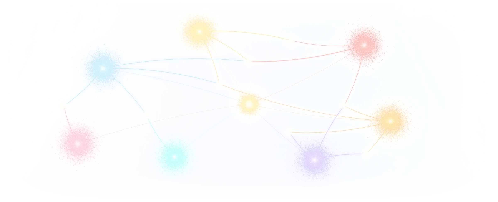
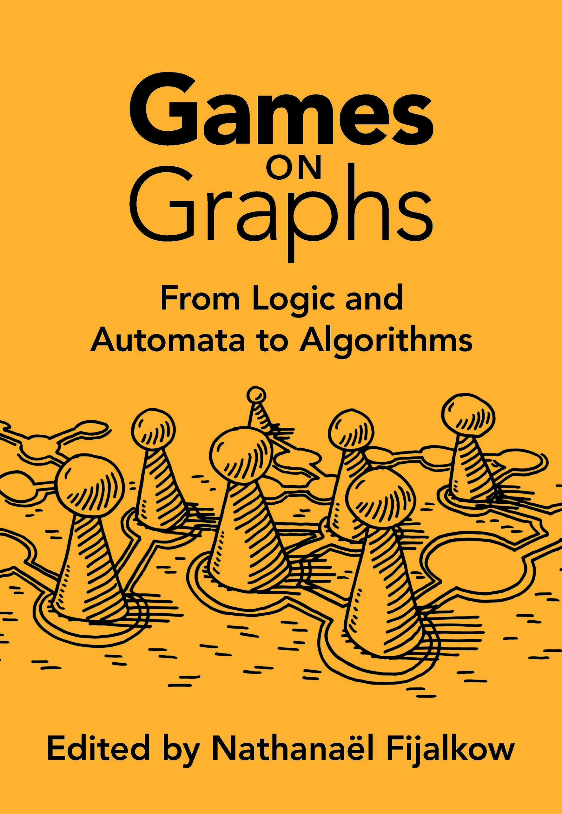
Games on Graphs, ouvrage collectif coordonné par N. Fijalkow. Cambridge University Press, 2026
Synthèse de stratégies sous observation partielle : une classe décidable de POMDP.
AAAI 2025 · Outstanding Paper
Recherche exhaustive massivement parallèle : formules LTL et expressions MBA. CAV 2024 · TACAS 2026 · NeurIPS 2026
Recherche guidée par réseaux de neurones, avec G. Lagarde. AAAI 2022 · AAAI 2025
Logiciels libres : Scarlet, Bolt, BordAX.
Test de propriété des langages réguliers : une trichotomie. ICALP 2025
Recherche de motifs en mémoire réduite.
CPM 2024 · Best Paper
Plongement ultramétrique en temps sous-quadratique, avec G. Lagarde. AAAI 2025
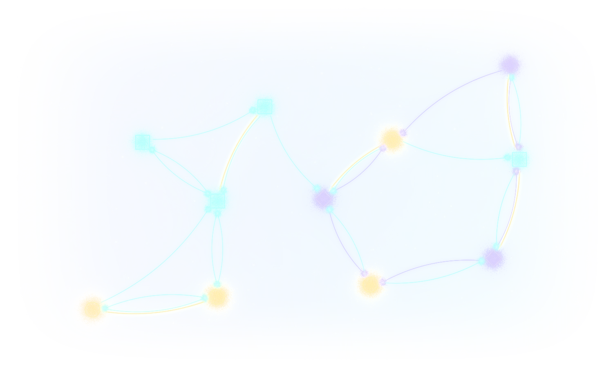
Existence de stratégies optimales pures et stationnaires dans les jeux stochastiques.
Une classe décidable de POMDP.
AAAI 2025 · Outstanding Paper
Synthèse distribuée de contrôleurs sans interblocage. ICALP 2022 · LMCS 2025
Co-concepteur de l’algorithme national d’admission, avec C. Mathieu.
Code ouvert, et vérification formelle du calcul des ordres d’appel.
Responsable des projets Parcoursup et MonMaster pour le ministère, avec D. Auber.
Des suggestions personnalisées de formations pour chaque lycéen, au cœur du « Plan Avenir » du ministère.
Algorithme amélioré par G. Lagarde et G. Bathie : simple, explicable et open source.
Complétude de l’axiomatisation de Kozen, un problème ouvert pendant douze ans.
LICS · Test of Time 2015
Expressivité du μ-calcul face à la logique monadique du second ordre, avec D. Janin.
CONCUR · Test of Time 2021
Construction optimale des automates de Zielonka. ICALP 2010
Synthèse de moniteurs distribués. MFCS 2025, conférence invitée
Communication par boîtes aux lettres synchronisables. CONCUR 2024
Logique à deux variables sur les mots et les arbres de données, pour XML.
PODS 2006 · Best Paper
Systèmes temps réel : projet ANR Ticktac et le vérificateur TChecker.
BoNesis construit les réseaux compatibles avec une architecture et des propriétés dynamiques observées.
Une modélisation qualitative qui passe à l’échelle. Nature Communications 2020
Complexité des espaces pièges minimaux. SIAM J. Discrete Math. 2024
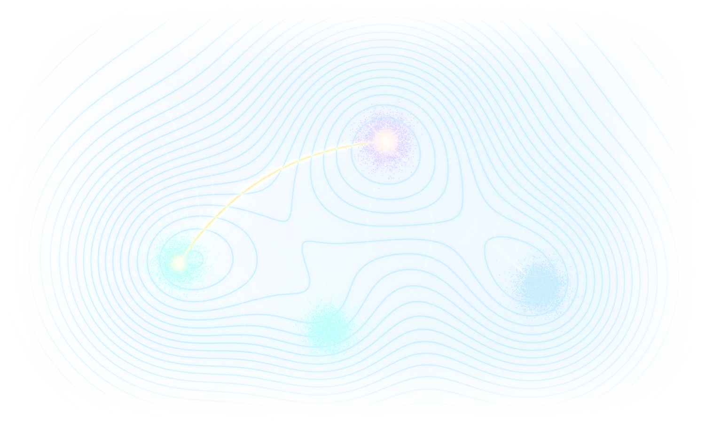
Inférer des réseaux à partir de transcriptomes pour prédire différenciation et reprogrammation. npj Syst. Biol. Appl. 2025
Données single-cell et dynamique booléenne. PLOS Comput. Biol. 2024
Glioblastome : résistance aux traitements (BRIC).
Seed2LP : retrouver les composés de départ d’un réseau métabolique. Bioinformatics 2025
Réseaux écologiques et dynamiques possibilistes, avec le CIRAD. Methods Ecol. Evol. 2025
Régulation génétique du métabolisme : projet ANR REGMETABO.
Générer du texte à partir de très grands ensembles de triplets, avec des agents LLM. INLG 2025 · Findings ACL 2026
Génération modulaire : le jeu de données Mod-D2T. INLG 2023
Langues peu dotées : générer de l’irlandais.
Co-organisateur de compétitions : Surface Realisation multilingue (2018 à 2020), WebNLG+ 2020, GEM 2024.
GEM, un banc d’essai multilingue pour la génération. EMNLP 2022
Éditeur des Generation Challenges d’INLG, de 2023 à 2025.
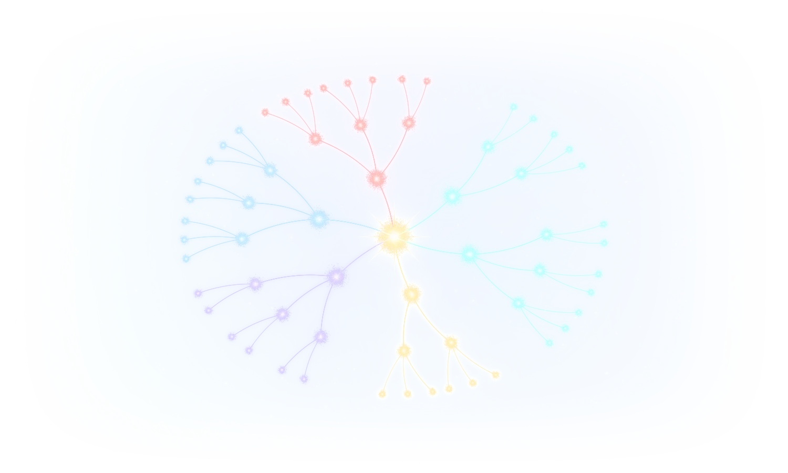
La crise de reproductibilité de l’évaluation humaine en NLP. Findings ACL 2023
Une taxonomie standard des critères de qualité, utile aussi pour la conformité réglementaire de l’IA. Findings ACL 2025